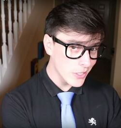
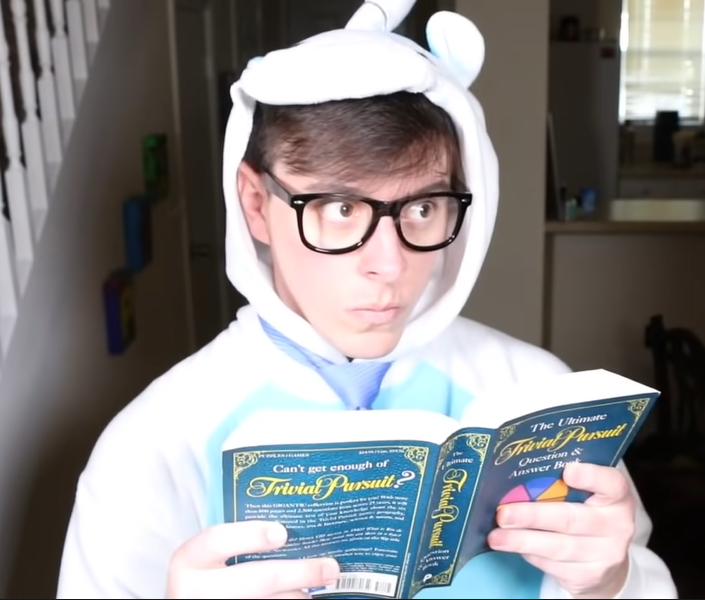
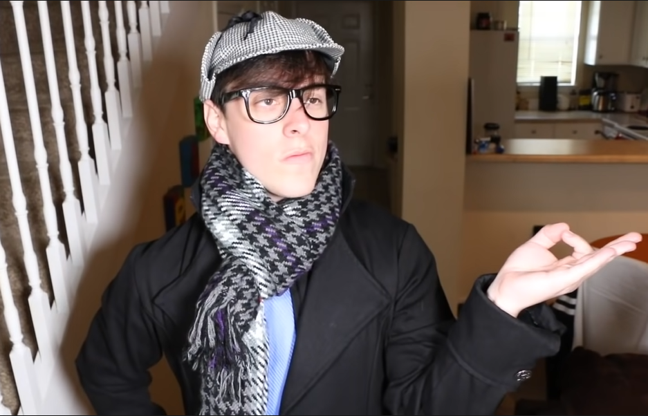
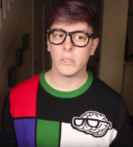
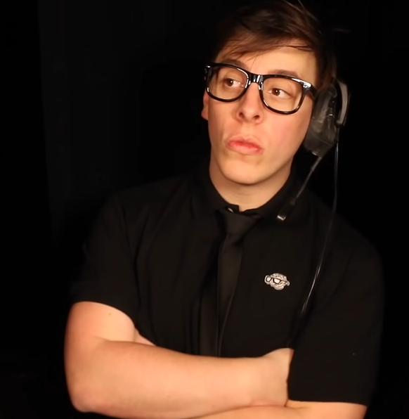
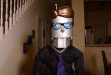
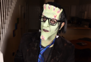
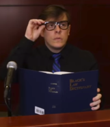

Logan Sanders is Thomas Sanders' first known Side. Logan represents every fact Thomas ever learned and his curiosity. His fellow Sides are Roman, Virgil and Patton.
In general, Logan represents Thomas’s intelligence and logic. Usually, Logan acts as the anchor to the other Sides, often pointing back to the original topic of conversation when they go off on tangents. He has also been referred to as the source of exposition for the Sanders Sides videos.
Etymology
Logan's name came from Logos, which is one of Aristotle's ingredients for persuasion. Logos is an appeal to logic such as persuading an audience by reason. It can be developed by using advanced, theoretical or abstract language, citing facts, using historical and literal analogies, and by constructing logical arguments. 'Logan' also means 'dwelling in a little hollow'. Although Logan is male, the name can be used for multiple genders.
Physical Appearance
Logan, alongside the other Sanders Sides, revamped his outfit at the end of Fitting In (Hogwarts Houses!). While the other Sides underwent relatively drastic changes, Logan continued to wear precise, clean-cut outfits throughout the series.
Former
He wore a black Express polo shirt with a light blue necktie. He wore thick black framed glasses and dark jeans. His belt was black and he had black dress shoes.
Current
His current outfit is still consists of a black polo shirt, but custom made with his logo on it. His necktie is blue and black striped instead of light blue. He still wears the same glasses, jeans, belt and dress shoes.

Other Outfits
On occasion, Logan has worn various outfits that are more extravagant than his usual attire. These outfits are more of a recurring gag than his standard clothing, but they are noted nonetheless.
Unicorn onesie
This is essentially just a white onesie with a pastel blue circle covering the stomach area, but it includes a unicornesque hood that sports two ears and a horn. Logan, true to his 'serious' nature, still wears his necktie on top of the onesie. The onesie has only appeared in The MIND vs. The HEART!, and at this time, only Patton, Thomas, and Logan himself know about the onesie.
Sherlock outfit
Here, Logan wears a large black trench coat with his tie peeking out near the neck. He wears a grey scarf with a pattern of black, blue, and white shapes on it, alongside a black and white checkerboard “Sherlock” cap. It is not an exact replica of Sherlock’s outfit, but the similarities are definitely there. This outfit first appeared in Losing My Motivation, but has been referenced and worn multiple times in later episodes including briefly during Am I ORIGINAL?.
Christmas sweater
In The Sanders Sides 12 DAYS OF CHRISTMAS!, Logan wears a unique square patterned multi-colored sweater (inspired by the De Stijl movement). Also, while they are caroling, he wears a black scarf.
Dramaturge
Though a minor and short term change, Logan dons a black tie instead of his typical blue one when acting as the dramaturge in Can LYING Be Good? He also wears a headset.
Puppet Form
When transformed into a puppet, Logan looks very much the same. His hair, glasses, and tie simply become metal while the rest of his body is turned into a robot. His eyes are a bright blue and his arms and hands are typical robot fashion.
Halloween Costume
In EMBARRASSING PHASES: The Nightmare Instead of Christmas!, Logan dresses up as Frankenstein's monster. He wears a prosthetic chin, forehead, and nose. His face is entirely green with metal stitches in various locations as well as bolts protruding from his neck. He wore his blue and black striped tie loose around his neck and his standard glasses over his makeup.
Court Outfit
Though another minor change, Logan wears a long sleeved shirt instead of his typical short sleeves in Selfishness v. Selflessness
Characteristics
Logan is level-headed, calm, and insightful, seeming to detect the presence of issues better than his fellow Sides. He is also stubborn and can come off as abrasive or incredibly blunt. Logan often uses sophisticated vocabulary when he talks.
As Logan represents Thomas' logic, he tends to use a lot of research and facts in his arguments. In several video descriptions citations to the articles referenced may be found. However, Logan tends to disregard other parts of Thomas at times, specifically his emotions.
While Logan is not necessarily vain like Roman, he holds himself highly in terms of intelligence, flat out stating that he is smarter than everyone else on multiple occasions. The most prevalent example of this being when he says that [he] do[es]n't think [he's] smarter then everyone else... [he] know[s] [he's] smarter than everyone else in Fitting In (Hogwarts Houses!). However, it seems that Logan is sensitive about his intelligence at, especially when he interjects with, [he] know[s] things too in Can LYING Be Good?? after Janus disguised as Patton gives the background information and exposition about their topic of discussion.
Relationships
Roman
Roman and Logan are often times at odds with each other. Evidently, this stems from Logan finding Roman to be a little too extra. While Roman's nature is all about fantasy and dreaming, Logan's is grounded and objective. They are quick to banter, and often end up insulting each other. While their rivalry is not as extreme as that of Roman and Virgil, they are still quick to fire off nicknames at one another. However, this does not mean they despise each other. Often times, for great works of art or theater, one must include logic in their line of thinking. This compromise is particularly evident in Am I ORIGINAL?, when Logan participates in a poetry slam. While this can be considered an excuse to insult Roman, Logan still did attempt to participate, showing some sort of camaraderie.
Most recently in Why Do We Get Out of Bed in the Morning?, Logan and Roman argued why Thomas should get out of bed in the morning and what motivates him to make videos. They didn't come to an agreement about why Thomas should make videos, but points from both their arguments inspired Thomas anyways. However unintentional their team work, it seems to have helped them get along better and understand that they are equally important to Thomas. Roman and Logan still struggle with this, an example being in Crofters - THE MUSICAL! when Roman sings that [he] can’t believe you’re telling me that he’s the favorite side!. Roman is clearly still insecure and at odds with Logan.
Virgil
When Virgil was first introduced as the antagonist, Logan did not like him. He thought Virgil was making Thomas anxious was exclusively a bad thing. However, recently, Logan is relatively friendly with Virgil, especially after ACCEPTING ANXIETY, Part 2/2: Can Anxiety Be Good? when Virgil was formally accepted as a Side.
While Logan and Virgil had a full video dedicated to them arguing, (My NEGATIVE Thinking), Logan admits that While [Virgil] may be wrong about a lot of things, [he] do[es]n't necessarily mind [his] company. In My Personality Q&A, when asked to compliment the other Sides Virgil says, [He] understand[s] reality better than the other guys, and that is comforting. Logan and Virgil are both grounded in reality more than the others, and while Virgil is inherently anxious about that very reality, there is a mutual understanding between the two.
Patton
Logan and Patton are not exactly the epitome of friendship. Logan represents the 'Mind' and Patton represents the 'Heart' and, as shown in The MIND vs. The HEART!, these two concepts are often times at odds with one another. This idea is very much present in the Sanders Sides, and Joan has confirmed them to be direct counterparts in the Sanders Sides Q&A.
Patton is centered around emotions which seems to antagonize Logan who states in a video, emotions [are] the bane of [his] existence. Logan is also seen to dislike dad jokes and puns, perhaps because of their lack of logic, which are utilized often by Patton. Regardless of Patton's humor, it is evident that Logan doesn't hate Patton. Logan is often even willing to compromise and work with Patton. At the end of MOVING ON, Part 2/2: Dealing With a Breakup, Logan offers Patton a cat hoodie as a sort of gift as well as to apologize to Patton. Another example of their friendship is when Patton says [Logan] is my hero! in Fitting In (Hogwarts Houses!) while explaining why he thinks Logan could be a Gryffindor. It is evident that Logan does care for Patton, however much they might disagree.
Janus
Logan initially did not realize Janus was there in place of Patton in Can LYING Be Good?? and it is not until the end that he does so. When Virgil answers Janus’s question Aren't we friends? with that [he's] not so sure we are, the camera shows the brief moment where something clicks in him and he realizes the disguise. Subsequently, he is the one who made Janus reveal his true nature. He then counteracts Janus’s argument of What you don't know can't hurt you. quite strongly in Can LYING Be Good??. Janus (disguised as Patton) also made an offhanded comment on how Logan was Everybody's favorite character!. Considering that Janus mostly speaks in lies, it can be inferred that Janus called Logan the least favorite character, something that Logan was labeled as in one of the first Sanders Sides videos and may still be insecure about. Overall, Logan is relatively hostile towards Janus.